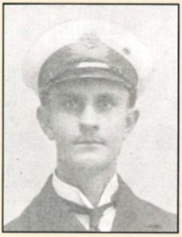

Joseph Hugh "Joe" Taylor


Joseph Hugh “Joe” Taylor was a John Lyon pupil and skilled engineer who worked at the Great Western Railway while continuing his technical studies. He later served with the Royal Naval Air Service, flying bombing and reconnaissance missions before being killed in a training accident in Greece in April 1918, aged 21.
Civilian Life - Joseph Taylor, known as “Joe” Taylor, was born on 1 April 1897, the son of Joseph and Annie Taylor. In 1911 he was living with his parents and younger sister, Marie Adelaide, at 52 Warrington Road, Harrow. His father was a merchant’s clerk with the East India Company. Joe was educated at the Lower School of John Lyon and, after leaving school, became an engineer at the Great Western Railway works at Swindon in 1914. While working, he continued his education through evening classes at the Technical Schools. He also regularly returned to his old school during holidays, where he remained in contact with former teachers and pupils.
Military Life - Taylor joined the Royal Naval Air Service and served as a Flight Sub-Lieutenant. Before his death he took part in bombing and reconnaissance flights over the Gallipoli Peninsula. He was subsequently killed on 17 April 1918 during a test flight.
According to his commanding officer, Taylor was taking off for a practice flight in a modern two-seater aircraft when the engine failed. While attempting to avoid hills ahead, the aircraft side-slipped into the ground, killing him instantly. His commanding officer, who had known him for about two years, stated that he had formed a “very high opinion” of him. Taylor was 21 years old and was buried at Mudros Cemetery in Greece.
The Lyonian reported his death with “deep and unfeigned grief”, remembering him as a modest, worthy and respected former pupil whose career had been cut short. His death was also reported in the Uxbridge & West Drayton Gazette, which reproduced the school's tribute and recorded the sympathy expressed for his parents.